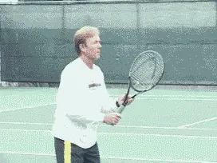
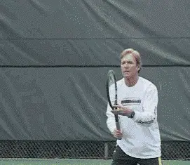
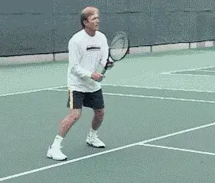
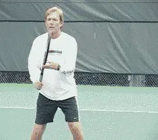
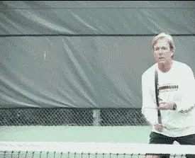
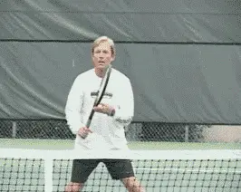

Previous: The Volley Part 2 - Private Lessons | 🏠 Classic Lessons Home | Next: The Volley Part 4 - Drills and More Drills
The Volley: Part 3
Comprehensive unified tennis knowledge base — Fundamentals, Stroke Analysis, Reference Library, and more
The Volley: Part 3
Types and Tactics
Scott Murphy
Now that readiness, mechanics, and footwork have been discussed (see part one and part two), it's on to the various types of volleys and their tactical considerations. The fact is, there really is no such thing as "the" volley. There are a myriad of situations: high balls, low balls, wide volleys, half volleys, drop volleys, volleys hit directly at you-the list goes on.
The next two articles will cover all of these situations. Consider it a primer on what you need to volley effectively in match play.
The High Volley

Play aggressively on the "ideal" volley, but maintain solid mechanics.
Let's start with the high volley. The volley we all love to play is the "ideal" high volley. This is a ball above the net, from mid chest to just above shoulder height. Assuming you're somewhere in the front two-thirds of the service box, it provides you with the opportunity to play aggressively.
The height allows you to "comfortably" volley outward and/or downward at a wide array of targets. The best volleyers really go after this ball by closing on it and accelerating the racquet head forward, making sure to maintain solid mechanics.
Too often this volley is there for the taking, but for lack of moving forward, the ball winds up dropping below the net where you no longer have the upper hand. Once this happens, don't make the mistake of trying to play an aggressive shot as a means of making up for your blown opportunity. It has now become a low volley and should be played accordingly.

Don't fall for the "sucker" ball. Volley firmly outward and go for depth.
The Sucker Ball
The "other" high volley is the one that you hit well above your head. This is what I consider the ultimate "sucker ball" in tennis. It practically begs you to be overly aggressive and hit it like a maniac.
Too many players try to hit this ball virtually straight down, or they try to hit it as if it were an overhead. In the former case, it will usually wind up in the bottom of the net, or, if it does go over the net, it takes a big, fat bounce so the opponent can track it down and either rekindle the point, or worse, end it with a pass. When players mistakenly try to hit this type ball as an overhead, the result is usually a line drive off the back fence.
This is a case where you have to let gravity work for you. Volley this ball firmly, but straight out in an attempt to achieve depth. Some follow through is usually required, particularly if the approaching ball lacks pace. If you want to volley this ball down and on an angle, be sure to practice constraint!
Remember, a high ball that has a great deal of velocity is probably going out (unless it has very heavy topspin), so take a good look before you strike.

A wide base and good knee bend take your shoulders and head closer to the ball.
The Low Volley
Because it's hit below the net, the low volley is more of a defensive or set up shot. If you're making this shot moving towards the net but you're in the back third of the service box, it's best to try and hit this deep and either down the line or down the middle, before continuing to move forward. If the incoming ball has a lot of pace you can borrow that pace by holding the racquet firmly and letting the ball bounce off your strings. If it lacks pace be sure to accelerate the racquet through the volley.
Practicing the low volley when you're closer to the net is essential because the position of the racquet face is critical. Ideally, it's open just enough that the ball stays down after it clears the net. If the racquet face is too open, the ball can sit up for a passing shot.
More often than not the problem here is that players simply don't get low enough to avoid some sort of racquet compensation, resulting in an error or a weak shot. It's what I call the "giraffe at the watering hole syndrome," where bending at the waist or not bending at all is the order of the day.
To volley the low ball well, you have to use your legs correctly. For starters, there should be a fair amount of distance between your feet to encourage your knees to be more flexible. Both knees should be bent, but the knee of the hind leg should be close to the ground. This will allow you to volley a low ball much the way you would an ideal, shoulder height ball because, in fact, your shoulders are lower and your eyes are closer to the plane of the ball. To get that hind leg down, try turning your back foot on its side or dragging the top of your shoe.

For the drop volley, imagine catching an egg.
Drop Volley
The drop volley can be a deadly shot on low volleys and in other situations, as long as it's not overdone. There's almost something narcotic about the drop volley. But we're not all John McEnroe or Pete Sampras, so you have to be selective when it comes to this shot. I've seen players make one sensational drop volley and then proceed to miss the next five trying to duplicate it. Then there's the player who'll miss the first five in a row trying to prove he can actually do it.
One of the real crowd pleasers in pro matches is the angled crosscourt drop volley off a low ball that just dies after it hits. (One of the advantages here, is that it's being hit over the lowest part of the net). Of course, the reverse side of this is when it sits up too long and an alert, speedy player races in and rips a passing shot. You need to try and keep this shot relatively low to the net or this will often be the consequence.
The best time to try the drop volley is when your opponent is playing well back of the baseline, has been pulled well wide of the court, or is obviously quite slow.
Hitting a drop volley involves decelerating the racquet head at impact. Imagine someone tossing you an egg or a water balloon in which you pull back a bit to ease the impact of the catch. That's really what you're doing on a drop volley, "catching" the ball. Generally, a little cupping of the racquet face accompanies this "catch", providing enough backspin to brake the ball even more.

Use a crossover step and think bout angling your wide volley
Wide Volley
The wide volley requires you to stretch your arm out. You may often find yourself without the supportive benefit of a laid back wrist. Remember Boris Becker's exciting wide volley lunges at Wimbledon? Those were real emergencies and the fact that he had grass to fall on likely enhanced his ability to pull them off.
When you have very little time to react and have to take a lunge step, your legs won't be able to help you much, if at all, in accelerating your volley. At the same time, your arm and wrist will virtually be in a straight line, so your shoulder will have to be the deciding factor in controlling and accelerating the shot.
If possible, make your lunge with a crossover step, because your reach will be longer, your balance will be better, and you'll be able to recover faster. When you're hitting the wide volley from this position, you can think more about angling it. This is one of the few instances where the head of the racquet will actually be ahead of the wrist.
Speaking of the angled volley, whether it is wide or not, how many times have you gone to angle the ball into a mile of open court and wound up hitting it into the alley or beyond? It's painful isn't it? In your haste to take advantage of a golden opportunity, you wind up overdoing it.
The main thing to remember here is that there is a MILE of open court. Most of the time, all you have to do is "bump" the ball over there, leaving a lot more margin for error. On rare occasions, where you're playing someone with Lleyton Hewitt type speed, it may be necessary to hit the volley more crisply. Spend the time practicing this shot because it can be devastating when you miss it in a match.

Recover after every volley and never assume the ball won't come back!
Recovery
One last thing, and that is the need to recover from volley to volley. This is very important!
Never assume the ball won't come back, even in the most offensive situations, particularly if you've played a low volley or a wide volley. Don't languish! Recover your form and continue to be proactive. Remember, you're closer to the action and it's important to keep the pressure on the player trying to pass.
Next, half volleys, swinging volleys, the lob volley, and dealing with those shots right at your body.

Scott Murphy is from Marin County, California where he started playing tennis at age 5 in a family of tennis nuts. Both of his parents were major influences in his development. He also took lessons from Marin legend Hal Wagner and former top 10, Harry Roach. Scott is a graduate of the University of California at Berkeley where he played baseball and football but continued to work on his tennis game with renowned coach Chet Murphy.
He was the head pro at San Domenico/Sleepy Hollow Tennis Club for over 20 years. He also directed the Nike Tahoe Tennis Camp at the Granlibakken Resort for 10 years. Scott now teaches privately in Ross, Marin County and in the summer he directs the Tuscan Tennis Academy which he founded in Quarrata, Italy.
Check out Scott's website at scottmurphytennis.net
You can contact Scott directly at: scottmrph@yahoo.com
Source: tennisplayer.net archive — The Volley Part 3 - Types and tactics.docx (John Yandell teaching library, 2002-2022). Extracted and rendered as HTML for Tennis Future Lab.